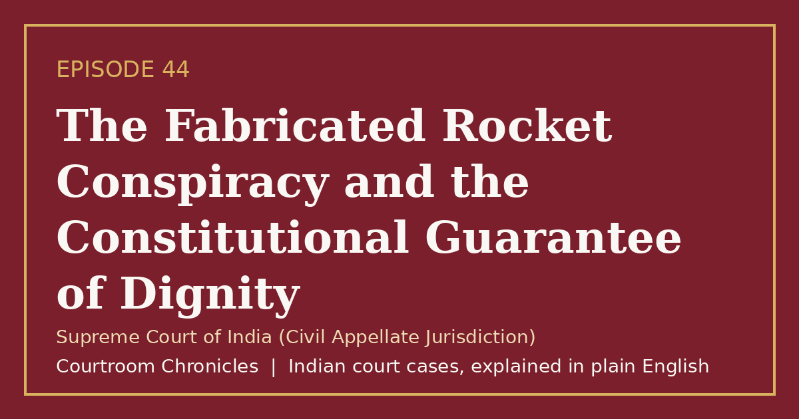

Episode 44
The Fabricated Rocket Conspiracy and the Constitutional Guarantee of Dignity
A landmark constitutional ruling awarded substantial public law compensation to an aerospace scientist subjected to malicious prosecution and custodial torment.
Constitutional lawMalicious prosecutionCustodial tortureHuman dignityArticle 21 jurisprudence
#CourtroomChronicles#IndianLaw#HumanDignity#SpaceProgram#JusticeServed#ConstitutionalLaw#SupremeCourtOfIndia

Listen
- Court
- Supreme Court of India (Civil Appellate Jurisdiction)
- Date of Decision
- September 14, 2018
- Professional Role
- Project director leading indigenous liquid and cryogenic propulsion space engineering programs
- Nature of Allegations
- Fabricated allegations of international espionage and unauthorized transfer of rocket blueprints
- Remedy Awarded
- Fifty lakh rupees in constitutional public law compensation and appointment of a judicial inquiry committee
Key takeaways
- The state must pay substantial public law compensation when law enforcement officers engage in malicious prosecution and custodial abuse.
- Reputation and personal dignity are fundamental constitutional rights protected from arbitrary police fabrication.
- Executive authorities cannot override judicial acceptance of federal closure reports by launching endless reinvestigations.
The case in brief
When a senior aerospace engineer leading national cryogenic rocket propulsion development was arrested outside his residence, state police authorities and local intelligence operatives spun a sensational narrative of international space espionage. The scientist was detained in secret interrogation centers, subjected to sleep deprivation and physical torment, and pressured to sign fabricated confessions implicating top space agency leadership.
A federal investigative agency audited every classified repository across national aerospace facilities, concluding that the entire espionage narrative was completely false and that not a single technical drawing was missing. Despite federal closure reports accepted by the magistrate, state authorities attempted to initiate a fresh reinvestigation to sustain the charges, forcing the victim into protracted legal battles across appellate courts.
The Supreme Court declared that reputation and personal dignity constitute fundamental and non-negotiable facets of the right to life. The court awarded fifty lakh rupees in constitutional tort compensation for malicious prosecution and established a high-level committee headed by a retired Supreme Court judge to hold erring police officers accountable for deliberate institutional fabrication.
Timeline
- Wrongful Custodial Arrest
A leading cryogenic space engineer is arrested by state police on fabricated allegations of rocket blueprint espionage.
- Federal Investigative Exoneration
Federal investigators submit a comprehensive closure report finding all espionage allegations false and baseless.
- Reinvestigation Quashed
The Supreme Court quashes state administrative attempts to conduct a reinvestigation after federal closure.
- Constitutional Compensation Verdict
The Supreme Court awards fifty lakh rupees for custodial harassment and institutes a judicial inquiry into police misconduct.
- Judicial Inquiry Outcome
A judicial committee submits findings regarding police conspiracy, prompting federal criminal proceedings against culpable officers.
What the court decided
Appeals allowed; state directed to pay fifty lakh rupees as public law compensation for mental cruelty and reputational ruin, alongside the constitution of a committee headed by a retired Supreme Court judge to recommend action against erring officers.
Key holdings
- Reputation is an inseparable facet of the right to life and personal dignity guaranteed under Article 21 of the Constitution.
- Malicious arrest and custodial torment inflicted by law enforcement agencies demand immediate public law remedies under constitutional jurisdiction.
- Criminal investigation cannot be manipulated into an engine of institutional harassment against innocent public servants.
- State police authorities possess no legal authority to order a de novo reinvestigation after a competent federal agency has completed a statutory probe.
Legal principles
Constitutional Tort and Public Law Remedy
Courts exercising constitutional jurisdiction can award monetary compensation against state instrumentalities for grave violations of fundamental personal liberties.
In this case: The court granted substantial monetary redress to restore honor and penalize state abuse of power that caused irreparable professional and personal devastation.
Right to Reputation as Human Dignity
An individual's public standing and professional honor are protected aspects of personal liberty that the state cannot arbitrarily destroy through malicious prosecution.
In this case: The bench recognized that branding an eminent technological pioneer as a traitor inflicted profound custodial degradation requiring strict state accountability.
Statutory Finality of Investigation
Once a specialized investigative agency submits a final closure report accepted by a magistrate, executive authorities cannot order indefinite reinvestigations.
In this case: The court held that state administrative notifications ordering reinvestigation were unlawful attempts to perpetuate harassment without fresh material.
The law then and now
The substantive rights were vindicated under constitutional remedies provided by Article 32 and Article 21, while the underlying criminal offenses and procedural controversies operated under the Code of Criminal Procedure, 1973, and the Indian Penal Code, 1860, prior to the enactment of the Bharatiya Sanhitas.
Left: the law applied to this case. Right: the matching provision today (the new criminal codes apply only to offences on or after 1 July 2024).
- Bharatiya Nagarik Suraksha Sanhita, 2023Section 193(9)Further investigation with permission of court
Explicitly codifies judicial permission requirements before conducting further investigations following submission of a primary police report.
Re-enacted prescribing rigorous imprisonment for maliciously framing innocent individuals with serious criminal offenses.
- Indian Penal Code, 1860Section 167Public servant framing an incorrect document with intent to cause injuryBharatiya Nyaya Sanhita, 2023Section 202Public servant framing incorrect document with intent to cause injury
Modernized penal framework punishing law enforcement officials who fabricate records or false witness statements.